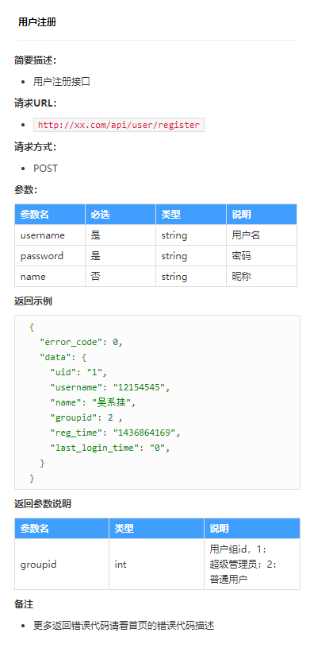
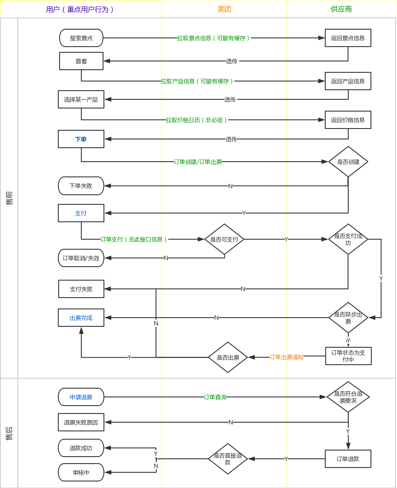
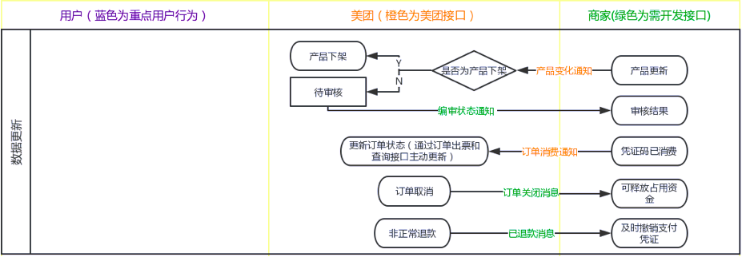
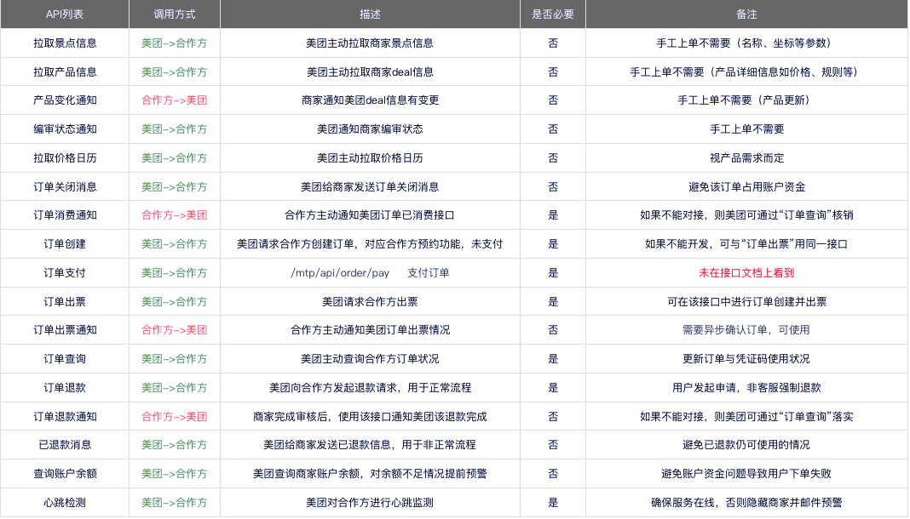

API，全称是Application Programming Interface，即应用程序编程接口，我们日常中习惯简称为“接口”。API事实上是在内部预先定义了函数，能够使开发人员无须明白API内部实现的机制，就能够实现某一个功能。
API的作用
各个子系统或者各个模块之间通过接口进行调用，可以让整个系统拓展性增强。
各个子系统或各模块之间信息传输必须要进行一定的安全验证，保证信息传输的正确性。
API文档的结构
1、接口描述：这个接口是用来干嘛的，以及相关的规则
2、接口地址：以网址的形式展现，你通过发送请求给这个网址来对接口进行交互操作
3、请求方法：常用的有post和get两种方式，一个是读接口(常用get)一个是写接口(常用post)
4、请求参数：请求该接口时，需要提供的参数，参数属性包括名称、类型、是否必填、描述等
5、返回参数：接口正常响应后，返回的内容
6、错误代码：接口请求失败后，返回的错误代码

API传值情况
同步：主要作用于页面跳转，传值信息主要将页面所要处理的最关键信息传输即可。
异步：是为了强调给对接的模块处理业务信息，传值信息根据实际情况尽可能详细一些，但是必须和本接口设计的目标一致，不要传输太多无用的参数。
产品逻辑
以美团门票直连系统为例
系统结构


接口总览
按接口类型和属性可分为三类：数据类、交易类和通知类。有一部分为美团接口，另一部分接口需要商家进行开发。

数据类：商家数据对接到美团（涉及到商家的4个接口，拉取产品信息、产品变化通知、拉取景点信息、拉取价格日历）
交易类：“用户——美团——商家”的交易行为（涉及到商家的5个接口）
通知类：包括商家开发的已出票、票已使用、已退款3个接口，美团自有的已退款、查余额、编审状态通知的3个接口。
异常问题
1. 用户体验 —— 具体场景 & 数据监控
对用户来说，流程的任一节点不顺畅，都会导致体验不好，故根据用户行为轨迹来进行数据监控。
①页面展示慢——接口响应时长、用户页面停留时长、跳失率
Reason：实时调接口查询景点&产品信息，因数据量大或频率快导致。
Solution：缓存数据，每N分钟更新一次。
②数据展示异常——后台返回接口异常的次数和概率
Reason：接口超时或异常。
Solution：可以设定重复调用，多次重试失败后，通过邮件等形式通知到运营、技术或商家。
针对数据型接口，对产品进行下架或隐藏处理。
针对交易型接口，下单、支付的问题可以提醒用户、为用户推荐同类产品、对产品进行下架或隐藏处理；退票类问题可以建议用户之后重试，如果比较紧急可以联系客服加急处理。
针对通知型接口，不涉及用户，邮件处理即可，可人工介入更新信息。
③产品变动，特别是变价——下单失败率、变价率、出票失败率
Reason：数据更新有时间差。
Solution：
- 当某一产品的失败率或变价率超出规定，可隐藏或下架；
- 针对某些产品库存少的情况进行提示，预告风险；
- 设定合理的定时更新任务。
④下单/支付/退票失败——失败率、失败原因
Reason：用户可能多次提交，或者订单已使用、已关闭等客观原因，无法成功。
Solution：
- 需要加入检验机制，比如在短时间内重复提交不调用接口，直接返回原结果；
- 善意提醒用户不要重复提交，如“您的手太快了，请休息30s后再试”；
- 可以提供IM人工或电话咨询、留言等选项。
⑤服务响应时间长——手工操作订单量和占比
Reason：比如用户提交退票后长时间不退款；支付后长时间不出票
Solution：
- 定时调用订单查询接口，更新订单状态并短信/推送消息告知用户；
- 超过服务规范时间前发送预警邮件，人工介入处理。
2. 商家体验 —— 数据监控 & 具体场景
对商家来说，用户体验不重要，转化率和利润才是重点，故数据监控以业务指标为主。
①重复生单、生单不支付占库存——订单量、订单支付转化率、支付失败率、库存占用量和支付量
Reason：用户手速太快；恶意占库存
Solution：制定规则，同一人只能占一个库存；同一订单最多只能订N个人。
②恶意重复调用接口——涉及到的每个接口调用频率
Reason：比如短时间重复调用某一接口
Solution:
- 规定同一IP地址不能在短时间内多次调用；
- 直接返回第一次调用接口的结果，不再重复调用；
- 每个接口在同一时间最多N次调用，否则返回失败等。
③因数据更新不及时等导致的亏损——（佣金、广告）投入产出比、人为损失
Reason：用户使用后退款完成、用户支付后变价等
Solution：根据时间差、处理规则来明确划定责任方。
④结算问题——财务对账自身支出（退款）和收入（美团给商家的结算金额）
Reason：平台和商家以“T+N”的方式结算
Solution：
- B端订单系统里的财务对账功能，可以用邮件形式每日发送；
- 监测异常数据，如当日无结算、结算金额与订单金额不一致。